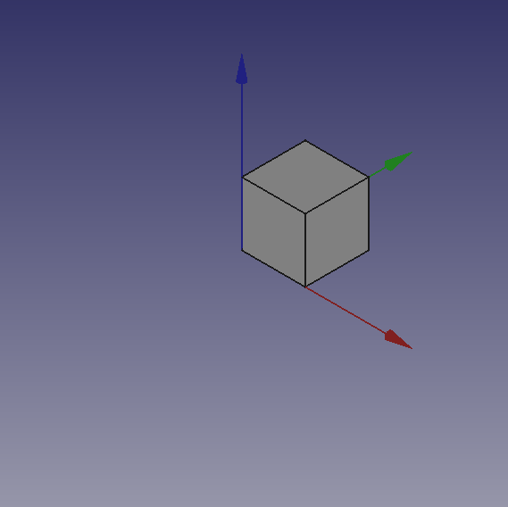
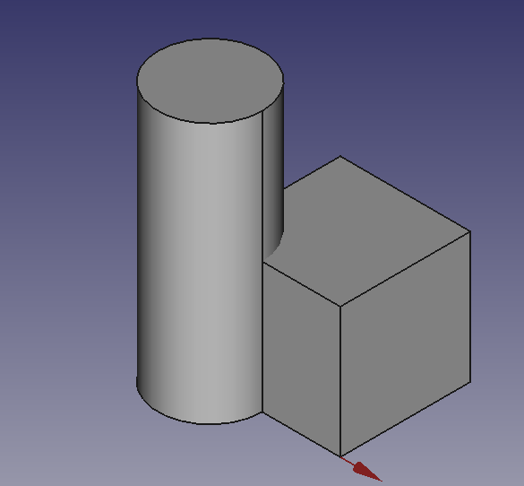
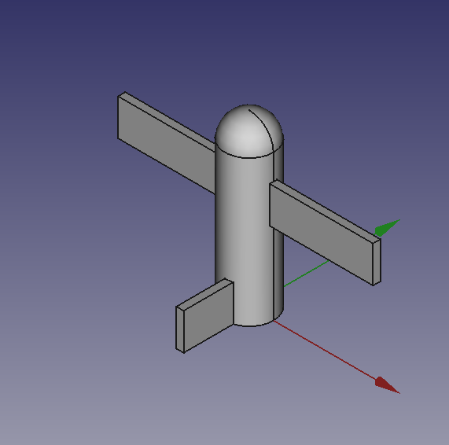
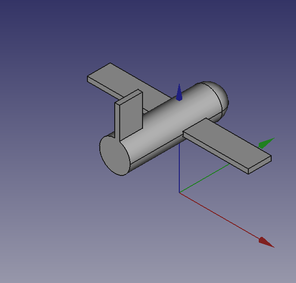
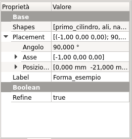

Scripts/pl
| Temat |
|---|
| Tworzenie skryptów |
| Poziom trudności |
| Podstawowy |
| Czas wykonania |
| Autorzy |
| onekk Carlo |
| Wersja FreeCAD |
| 0.19 |
| Pliki z przykładami |
| Zobacz również |
| - |
Wprowadzenie
Przez tworzenie skryptów rozumiemy tworzenie obiektów topologicznych za pomocą interpretera Python dla FreeCAD. Program FreeCAD może być używany jako "bardzo dobry" zamiennik OpenSCAD, głównie dlatego, że ma prawdziwy interpreter środowiska Python, co oznacza, że ma na pokładzie prawdziwy język programowania, prawie wszystko, co można zrobić z GUI, można zrobić za pomocą skryptu Python.
Niestety informacje na temat skryptów w dokumentacji, a nawet na tej Wiki, są rozproszone i brakuje im jednolitości "pisania”, a większość z nich jest wyjaśniona w zbyt techniczny sposób.
Rozpoczęcie pracy
Pierwszą przeszkodą w łatwej drodze do tworzenia skryptów jest to, że nie ma bezpośredniego sposobu na dostęp do wewnętrznego edytora Python FreeCAD poprzez pozycję menu lub ikonę na pasku narzędzi, ale wiedząc, że FreeCAD otwiera plik z rozszerzeniem .py w wewnętrznym edytorze Python, najprostszą sztuczką jest utworzenie go w ulubionym edytorze tekstu, a następnie otwarcie go za pomocą zwykłego polecenia Plik → Otwórz.
Aby zrobić to w uprzejmy sposób, plik musi być napisany w pewnym porządku, edytor FreeCAD Python ma dobre podświetlanie składni, którego brakuje w wielu prostych edytorach, takich jak Notatnik Windows lub niektóre podstawowe edytory Linuksa, więc wystarczy napisać te kilka linijek:
"""filename.py
A short description of what the script does
"""
Zapisz je ze znaczącą nazwą z rozszerzeniem .py i załaduj wynikowy plik w FreeCAD, za pomocą wspomnianego polecenia Plik → Otwórz.
Minimalny przykład tego, co jest niezbędne w skrypcie, jest pokazany w tym fragmencie kodu, który można wykorzystać jako szablon dla prawie każdego przyszłego skryptu:
"""filename.py
First FreeCAD Script
"""
import FreeCAD
from FreeCAD import Placement, Rotation, Vector
import FreeCADGui
DOC_NAME = "Wiki_Example"
DOC = FreeCAD.newDocument(DOC_NAME)
FreeCAD.setActiveDocument(DOC.Name)
ROT0 = Rotation(0, 0, 0)
VEC0 = Vector(0, 0, 0)
# Helper function
def set_view():
"""Rearrange View."""
if not FreeCAD.GuiUp:
return
doc = FreeCADGui.ActiveDocument
if doc is None:
return
view = doc.ActiveView
if view is None:
return
# Check if the view is a 3D view:
if not hasattr(view, "getSceneGraph"):
return
view.viewAxometric()
view.fitAll()
Powyższy kod zawiera kilka sztuczek:
import FreeCADTa linia importuje FreeCAD w interpreterze FreeCAD Python, może wydawać się zbędna, ale tak nie jest.from FreeCAD import Placement, Rotation, Vector. Umiejscowienie Obrót i Wektor są szeroko stosowane w skryptach FreeCAD, importowanie ich w ten sposób pozwoli zaoszczędzić na wywoływaniu ich za pomocąFreeCAD.VectorlubFreeCAD.PlacementzamiastVectorlubPlacement, zaoszczędzi to wiele naciśnięć klawiszy i sprawi, że linie kodu będą znacznie krótsze.
Zacznijmy od małego skryptu, który wykonuje bardzo małą pracę, ale pokazuje moc tej metody.
# Script functions
def my_box(name, len, wid, hei):
"""Create a box."""
obj_b = DOC.addObject("Part::Box", name)
obj_b.Length = len
obj_b.Width = wid
obj_b.Height = hei
DOC.recompute()
return obj_b
# objects definition
obj = my_box("test_cube", 5, 5, 5)
set_view()
Wpisz powyższe linie kodu po # Script functions i naciśnij zieloną strzałkę na pasku narzędzi Makrodefinicje.
Zobaczysz kilka magicznych rzeczy, otworzy się nowy dokument o nazwie "Wiki_example", a w widoku 3D zobaczysz Sześcian, taki jak na poniższym obrazku.
{kind=link}

Coś więcej
Nie jest to zbyt niesamowite? Tak, ale musimy od czegoś zacząć, możemy zrobić to samo z walcem, dodając te linie kodu po metodzie my_box() i przed linią: # objects definition.
def my_cyl(name, ang, rad, hei):
"""Create a Cylinder."""
obj = DOC.addObject("Part::Cylinder", name)
obj.Angle = ang
obj.Radius = rad
obj.Height = hei
DOC.recompute()
return obj
Nawet tutaj nie ma nic zbyt ekscytującego. Warto jednak zwrócić uwagę na kilka osobliwości:
- Brak zwykłego odniesienia do
App., obecnego w wielu fragmentach kodu Dokumentacji, jest zamierzony, kod ten może być użyty nawet do wywołania FreeCAD jako modułu w zewnętrznym interpreterze Pythona, nie jest to łatwe do zrobienia z AppImage, ale z pewną ostrożnością można to zrobić. Plus w standardowym motto Pythona, że "lepiej jawnie niż niejawnie"App.wyjaśnia w bardzo "kiepski" sposób, skąd pochodzą rzeczy. - Zwróć uwagę na użycie "stałej" nazwy przypisanej do aktywnego Dokumentu w
DOC = FreeCAD. activeDocument(); activeDocument nie jest "stałą" w ścisłym sensie, ale w sposób "semantyczny" jest naszym "aktywnym dokumentem", który dla naszego użytku jest właściwą "stałą", więc konwencja Pythona polega na używaniu nazwy "ALL CAPS" dla "stałych", nie wspominając o tym, żeDOCjest znacznie krótszy niżFreeCAD.activeDocument(). - Każda metoda zwraca geometrię, będzie to jasne w dalszej części strony.
- Geometria nie miała właściwości
Placement, podczas używania prostych geometrii do tworzenia bardziej złożonych geometrii, zarządzaniePlacementjest kłopotliwe.
Co teraz zrobić z tą geometrią?
Wprowadźmy operacje logiczne. Jako przykład początkowy umieść te linie po my_cyl. To utworzy funkcję dla operacji Fusion znanej również jako Union:
def fuse_obj(name, obj_0, obj_1):
"""Fuse two objects."""
obj = DOC.addObject("Part::Fuse", name)
obj.Base = obj_0
obj.Tool = obj_1
obj.Refine = True
DOC.recompute()
return obj
Tutaj również nie ma nic wyjątkowego, należy jednak zwrócić uwagę na jednolitość kodowania metod. To podejście jest bardziej liniowe niż te spotykane w innych samouczkach dotyczących skryptów, ta "liniowość" znacznie pomaga w czytelności, a także w operacjach wycinania, kopiowania i wklejania.
Użyjmy geometrii, usuńmy linie poniżej sekcji kodu zaczynającej się od # objects definition i wstawmy następujące linie:
# objects definition
obj = my_box("test_cube", 5, 5, 5)
obj1 = my_cyl("test_cyl", 360, 2, 10)
fuse_obj("Fusion", obj, obj1)
set_view()
Uruchom skrypt za pomocą zielonej strzałki, a w widoku 3D zobaczymy coś takiego:
{kind=link}

Umiejscowienie
Koncepcja umiejscowienia jest stosunkowo złożona, zobacz poradnik samolotu, aby uzyskać bardziej dogłębne wyjaśnienie.
Zazwyczaj potrzebujemy umieścić geometrie względem siebie, podczas budowania złożonych obiektów jest to powtarzające się zadanie, najczęstszym sposobem jest użycie właściwości geometrii Placement.
FreeCAD oferuje szeroki wybór sposobów ustawiania tej właściwości, jeden jest bardziej dostosowany do drugiego w zależności od wiedzy i doświadczenia użytkownika, ale bardziej proste pisanie jest wyjaśnione w cytowanym samouczku, używa osobliwej definicji części Rotation Placement, dość łatwej do nauczenia.
FreeCAD.Placement(Vector(0, 0, 0), FreeCAD.Rotation(10, 20, 30), Vector(0, 0, 0))
Ale ponad innymi rozważaniami, jedna rzecz jest kluczowa, geometria punkt odniesienia. Innymi słowy punkt, z którego obiekt jest modelowany przez FreeCAD, jak opisano w tej tabeli, skopiowanej z umiejscowienia:
| Object | Punkt odniesienia |
|---|---|
| Part.Box | lewy (minx), przedni (miny), dolny (minz) wierzchołek |
| Part.Sphere | środek kuli |
| Part.Cylinder | środek dolnej powierzchni |
| Part.Cone | środek dolnej powierzchni (lub wierzchołek, jeśli dolny promień wynosi 0) |
| Part.Torus | środek torusa |
| Cechy wywodzące się ze szkiców | cecha dziedziczy pozycję bazowego szkicu. Szkice zawsze zaczynają się od Pozycja = (0, 0, 0). Pozycja ta odpowiada punktowi położenia odniesienia. |
Informacje te należy mieć na uwadze, zwłaszcza gdy musimy zastosować rotację.
Kilka przykładów może pomóc, usuń funkcję my_box i wszystkie linie po funkcji my_cyl i wstaw poniższy fragment kodu po funkcji my_cyl:
def my_sphere(name, rad):
"""Create a Sphere."""
obj = DOC.addObject("Part::Sphere", name)
obj.Radius = rad
DOC.recompute()
return obj
def my_box2(name, len, wid, hei, cent=False, off_z=0):
"""Create a box with an optional z offset."""
obj_b = DOC.addObject("Part::Box", name)
obj_b.Length = len
obj_b.Width = wid
obj_b.Height = hei
if cent is True:
pos = Vector(len * -0.5, wid * -0.5, off_z)
else:
pos = Vector(0, 0, off_z)
obj_b.Placement = Placement(pos, ROT0, VEC0)
DOC.recompute()
return obj_b
def mfuse_obj(name, objs):
"""Fuse multiple objects."""
obj = DOC.addObject("Part::MultiFuse", name)
obj.Shapes = objs
obj.Refine = True
DOC.recompute()
return obj
def airplane():
"""Create an airplane shaped solid."""
fuselage_length = 30
fuselage_diameter = 5
wing_span = fuselage_length * 1.75
wing_width = 7.5
wing_thickness = 1.5
tail_height = fuselage_diameter * 3.0
tail_position = fuselage_length * 0.70
tail_offset = tail_position - (wing_width * 0.5)
obj1 = my_cyl("main_body", 360, fuselage_diameter, fuselage_length)
obj2 = my_box2("wings", wing_span, wing_thickness, wing_width, True, tail_offset)
obj3 = my_sphere("nose", fuselage_diameter)
obj3.Placement = Placement(Vector(0, 0, fuselage_length), ROT0, VEC0)
obj4 = my_box2("tail", wing_thickness, tail_height, wing_width, False, 0)
obj4.Placement = Placement(Vector(0, tail_height * -1, 0), ROT0, VEC0)
objs = (obj1, obj2, obj3, obj4)
obj = mfuse_obj("airplane", objs)
obj.Placement = Placement(VEC0, Rotation(0, 0, -90), Vector(0, 0, tail_position))
DOC.recompute()
return obj
# objects definition
airplane()
set_view()
Wyjaśnijmy coś w kodzie:
- Zastosowaliśmy metodę definiowania sfery, używając najprostszej definicji, używając tylko promienia.
- Wprowadziliśmy drugi zapis dla Union lub Fusion, używający wielu obiektów, nie bardziej odległy od zwykłego Part::Fuse, który używa Part:Multifuse. Używamy tylko jednej właściwości
Shapes. Przekazaliśmy krotkę jako argumenty, ale akceptuje ona również listę. - Zdefiniowaliśmy złożony obiekt airplane, ale zrobiliśmy to w parametryczny sposób, definiując niektóre parametry i wyprowadzając inne parametry, poprzez pewne obliczenia, w oparciu o główne parametry.
- Użyliśmy kilku właściwości
Placementw metodzie, a przed zwróceniem ostatecznych geometrii użyliśmy właściwościRotationz napisem Przechylenie-Pochylenie-Odchylenie. Zwróć uwagę na ostatniVector(0, 0, tail_position), który definiuje środek obrotu całej geometrii.
 |
 |
 |
{kind=link}
{kind=link}
{kind=link}
Można łatwo zauważyć, że geometria airplane obraca się wokół swojego "barycentrum" lub "środka ciężkości", który ustaliłem na środku skrzydła, miejscu, które jest stosunkowo "naturalne", ale można je umieścić gdziekolwiek chcesz.
Pierwszy Vector(0, 0, 0) jest wektorem translacji, nieużywanym tutaj, ale jeśli zastąpisz airplane() tymi liniami:
obj_f = airplane()
print(obj_F.Placement)
W oknie raportu pojawi się ten tekst:
Placement [Pos=(0, -21, 21), Yaw-Pitch-Roll=(0, 0, -90)]
Co się stało?
FreeCAD przemieścił Vector(0, 0, 0), FreeCAD.Rotation(0, 0, -90), Vector(0, 0, tail_position) innymi słowy naszą definicję Umiejscowienia, która określa trzy komponenty, Przemieszczenie, Obrót i środek obrotu w "wewnętrznych" wartościach tylko dwóch komponentów, Przemieszczenie i Obrót.
można łatwo zwizualizować wartość tail_position za pomocą instrukcji print w metodzie airplane() i zobaczyć, że tak jest:
tail_position = 21.0
Innymi słowy, środek obrotu geometrii znajduje się w Vector(0, 0, 21), ale ten środek obrotu nie jest wyświetlany w GUI, można go wprowadzić jako wartość Umiejscowienie, nie można go łatwo wyszukać.
Jest to znaczenie słowa "niewygodny", którego użyłem do zdefiniowania właściwości Umiejscowienie.
To jest kompletny przykład kodu z przyzwoitym skryptem docstring zgodnie z konwencją Google docstrings:
"""Sample code.
Filename:
airplane.py
Author:
Dormeletti Carlo (onekk)
Version:
1.0
License:
Creative Commons Attribution 3.0
Summary:
This is sample code written for a FreeCAD Wiki page.
It creates an airplane shaped solid using standard "Part WB" shapes.
"""
import FreeCAD
from FreeCAD import Placement, Rotation, Vector
import FreeCADGui
DOC_NAME = "Wiki_Example"
DOC = FreeCAD.newDocument(DOC_NAME)
FreeCAD.setActiveDocument(DOC.Name)
ROT0 = Rotation(0, 0, 0)
VEC0 = Vector(0, 0, 0)
# Helper function
def set_view():
"""Rearrange View."""
if not FreeCAD.GuiUp:
return
doc = FreeCADGui.ActiveDocument
if doc is None:
return
view = doc.ActiveView
if view is None:
return
# Check if the view is a 3D view:
if not hasattr(view, "getSceneGraph"):
return
view.viewAxometric()
view.fitAll()
# Script functions
def my_cyl(name, ang, rad, hei):
"""Create a Cylinder."""
obj = DOC.addObject("Part::Cylinder", name)
obj.Angle = ang
obj.Radius = rad
obj.Height = hei
DOC.recompute()
return obj
def my_sphere(name, rad):
"""Create a Sphere."""
obj = DOC.addObject("Part::Sphere", name)
obj.Radius = rad
DOC.recompute()
return obj
def my_box2(name, len, wid, hei, cent=False, off_z=0):
"""Create a box with an optional z offset."""
obj_b = DOC.addObject("Part::Box", name)
obj_b.Length = len
obj_b.Width = wid
obj_b.Height = hei
if cent is True:
pos = Vector(len * -0.5, wid * -0.5, off_z)
else:
pos = Vector(0, 0, off_z)
obj_b.Placement = Placement(pos, ROT0, VEC0)
DOC.recompute()
return obj_b
def mfuse_obj(name, objs):
"""Fuse multiple objects."""
obj = DOC.addObject("Part::MultiFuse", name)
obj.Shapes = objs
obj.Refine = True
DOC.recompute()
return obj
def airplane():
"""Create an airplane shaped solid."""
fuselage_length = 30
fuselage_diameter = 5
wing_span = fuselage_length * 1.75
wing_width = 7.5
wing_thickness = 1.5
tail_height = fuselage_diameter * 3.0
tail_position = fuselage_length * 0.70
tail_offset = tail_position - (wing_width * 0.5)
obj1 = my_cyl("main_body", 360, fuselage_diameter, fuselage_length)
obj2 = my_box2("wings", wing_span, wing_thickness, wing_width, True, tail_offset)
obj3 = my_sphere("nose", fuselage_diameter)
obj3.Placement = Placement(Vector(0, 0, fuselage_length), ROT0, VEC0)
obj4 = my_box2("tail", wing_thickness, tail_height, wing_width, False, 0)
obj4.Placement = Placement(Vector(0, tail_height * -1, 0), ROT0, VEC0)
objs = (obj1, obj2, obj3, obj4)
obj = mfuse_obj("airplane", objs)
obj.Placement = Placement(VEC0, Rotation(0, 0, -90), Vector(0, 0, tail_position))
DOC.recompute()
return obj
# objects definition
airplane()
set_view()
- Tworzenie skryptów FreeCAD: Python, Wprowadzenie do środowiska Python, Poradnik: Tworzenie skryptów Python, Podstawy tworzenia skryptów FreeCAD
- Moduły: Moduły wbudowane, Jednostki miar, Ilość
- Środowiska pracy: Tworzenie Środowiska pracy, Polecenia Gui, Polecenia, Instalacja większej liczby Środowisk pracy
- Siatki i elementy: Skrytpy w Środowisku Siatek, v, Konwerska Mesh na Part, PythonOCC
- Obiekty parametryczne: Obiekty tworzone skryptami, Obsługa obrazu (Ikonka niestandardowa w widoku drzewa)
- Scenegraph: Coin (Inventor) scenegraph, Pivy
- Interfejs graficzny: Stworzenie interfejsu, Kompletne stworzenie interfejsu w środowisku Python (1, 2, 3, 4, 5), PySide, PySide examples początkujący, średniozaawansowany, zaawansowany
- Makrodefinicje: Makrodefinicje, Instalacja makrodefinicji
- Osadzanie programu: Osadzanie programu FreeCAD, Osadzanie GUI FreeCAD
- Pozostałe: Wyrażenia, Wycinki kodu, Funkcja kreślenia linii, Biblioteka matematyczna FreeCAD dla wektorów (deprecated)
- Węzły użytkowników: Centrum użytkownika, Centrum Power użytkowników, Centrum programisty